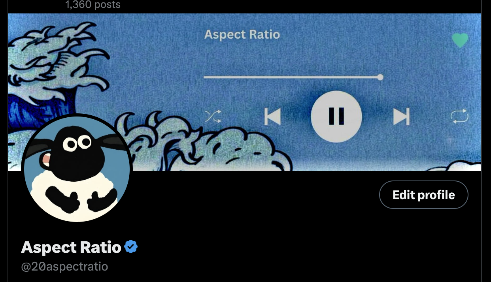

Out in the open / @20aspectratio
Learning out loud.
The experiments, fixes, and messy middle—shared as I go.
Right now
- Fixing the banner site
- Posting the messy version
- Not starting five new ideas

Out in the open / @20aspectratio
The experiments, fixes, and messy middle—shared as I go.
